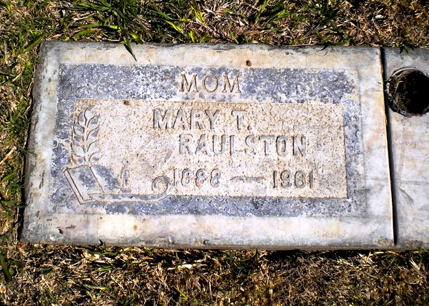

| 
Mary Tennessee HACKWORTH (1888-1961) |
Mary Tennessee HACKWORTH 1 2 3
Find A Grave, Memorial # 86505335 Mary married William Delbert RAULSTON. (William Delbert RAULSTON was born on Dec 22, 1870 in Paris, Lamar County, Texas, died on Jun 6, 1953 in Merced County, California and was buried in Evergreen Memorial Park, Merced, Merced County, California 5.) |
 Research Notes:
Research Notes: